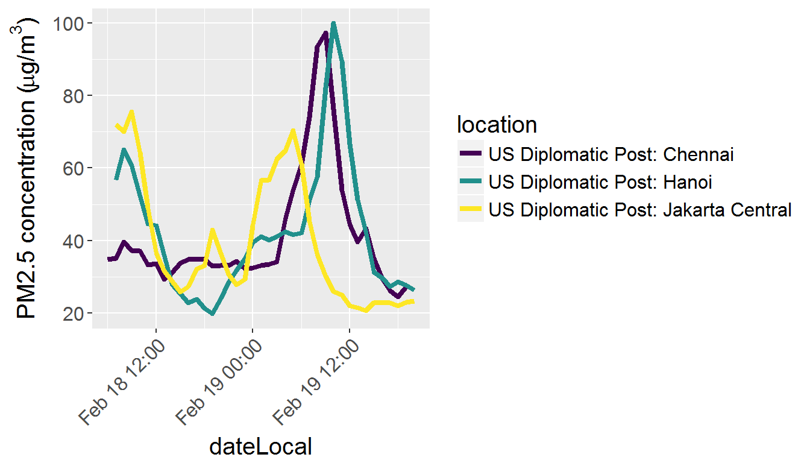
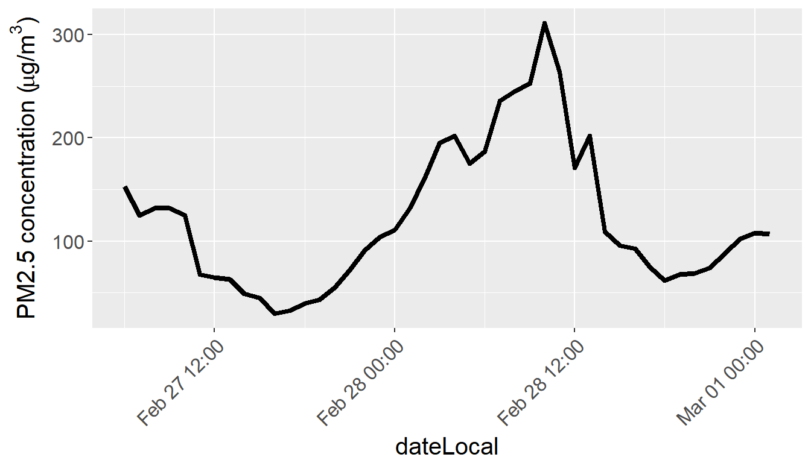

In this vignette I want to draw a graph inspired by https://pbs.twimg.com/media/CYOAGowW8AQs4Fy.png:large.
library("ropenaq")
library("ggplot2")
library("dplyr")
library("viridis")tbHanoi <- aq_measurements(city = "Hanoi", parameter = "pm25", date_from = as.character(Sys.Date()-1), limit = 1000)
tbJakarta <- aq_measurements(city = "Jakarta", parameter = "pm25", date_from = as.character(Sys.Date()-1), limit = 1000)
tbChennai <- aq_measurements(city = "Chennai", location = "US+Diplomatic+Post%3A+Chennai", parameter = "pm25", date_from = as.character(Sys.Date()-1), limit = 1000)
tbWarsaw <- aq_measurements(city = "Warszawa", location = "Marsza%C5%82kowska", parameter = "pm25", date_from = as.character(Sys.Date()-1), limit = 1000)
tbPM <- rbind(tbHanoi,
tbJakarta,
tbChennai,
tbWarsaw)
tbPM <- filter(tbPM, value >= 0)
ggplot() + geom_line(data = tbPM,
aes(x = dateLocal, y = value, colour = location),
size = 1.5) +
ylab(expression(paste("PM2.5 concentration (", mu, "g/",m^3,")"))) +
theme(text = element_text(size = 15)) +
theme(axis.text.x = element_text(angle = 45, hjust = 1)) +
scale_color_viridis(discrete = TRUE)
Another graph, for Delhi.
tbIndia <- aq_measurements(country = "IN", city = "Delhi", parameter = "pm25", date_from = as.character(Sys.Date()-1), limit = 1000)
tbIndia <- filter(tbIndia, value >= 0)
ggplot() + geom_line(data = tbIndia,
aes(x = dateLocal, y = value, colour = location),
size = 1.5) +
ylab(expression(paste("PM2.5 concentration (", mu, "g/",m^3,")"))) +
theme(text = element_text(size = 15))+
theme(axis.text.x = element_text(angle = 45, hjust = 1)) +
scale_color_viridis(discrete = TRUE)
{kind=link}